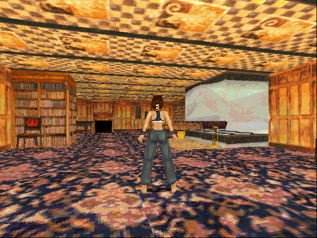
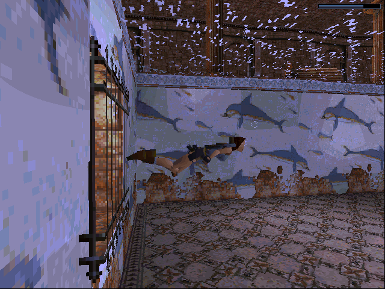
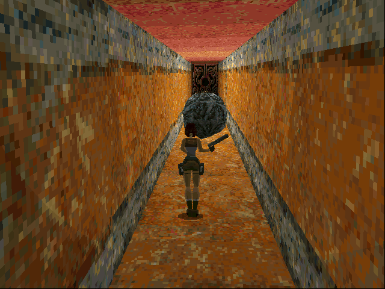
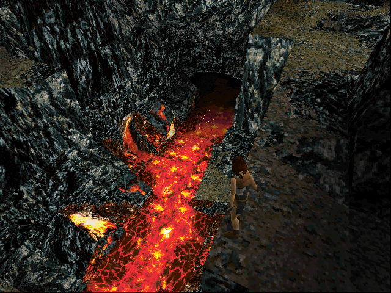

This is where it all began. In late 1996,
gamers around the world got their first glimpse of intrepid British adventurer Lara Croft.
She's been hired by Jacqueline Natla, CEO of Natla Technologies,
to locate a mysterious artifact rumored to lie buried in a Peruvian tomb.
With the gamer's help, Lara finds the artifact only to realize it's just part of a larger,
more powerful object: the Scion, a relic from the lost continent Atlantis.
Lara also learns she's not the only one after this prize, and (surprise, surprise!)
her new employer is not at all what she seems to be.




Lara Croft is hired by Jacqueline Natla, CEO of Natla Technologies,
to locate a mysterious artifact rumored to lie buried in a Peruvian tomb.
With the gamer's help, Lara finds the artifact only to realize it's just part of a larger,
more powerful object—the Scion, a relic from the lost continent Atlantis.
Lara also learns she's not the only one after the Scion, and (surprise, surprise!) her new employer is not at all what she seems to be.
The game includes 15 extensive levels,
in which Lara explores ancient ruins in South America, Greece, Egypt and ultimately Atlantis itself.
Tomb Raider was one of the first games to successfully blend action and adventure genres.
Gameplay centers on exploration and puzzle solving, but there's still plenty of combat as well.
By today's standards the graphics and controls are a bit primitive, but I believe the story and gameplay stand the test of time.